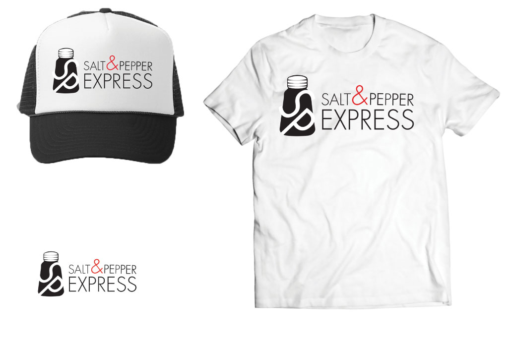

The Salt and Pepper Express logo has been re-designed to give a professional image that portrays their charismatic personality of their restaurant. Adaptability is one word that could be used for the design of this logo. It was re-designed to adapt to any vice and reproduce comfortably in all ways. It is flexible in the sense that it is able to present it self well at all sizes and shapes it is applied to. The saltshaker is a big part of the design of this logo. It represents the generic demand of all use of food. It represents the amenity of food and service. Within the shape of the saltshaker sits the initials of the business name. This give the logo a dynamic feel because of the visually pleasing negative and positive design. Also, this strategy helps the name of this business be recognized with out the word mark. The work mark is clean, sleek and simple. The logo is so powerful that the work mark can afford to be simplified. The watermark fits the exact size of the logo making the logo and the watermark appear and one piece. This strategy gives the logo in its entirety a very strong appeal..
